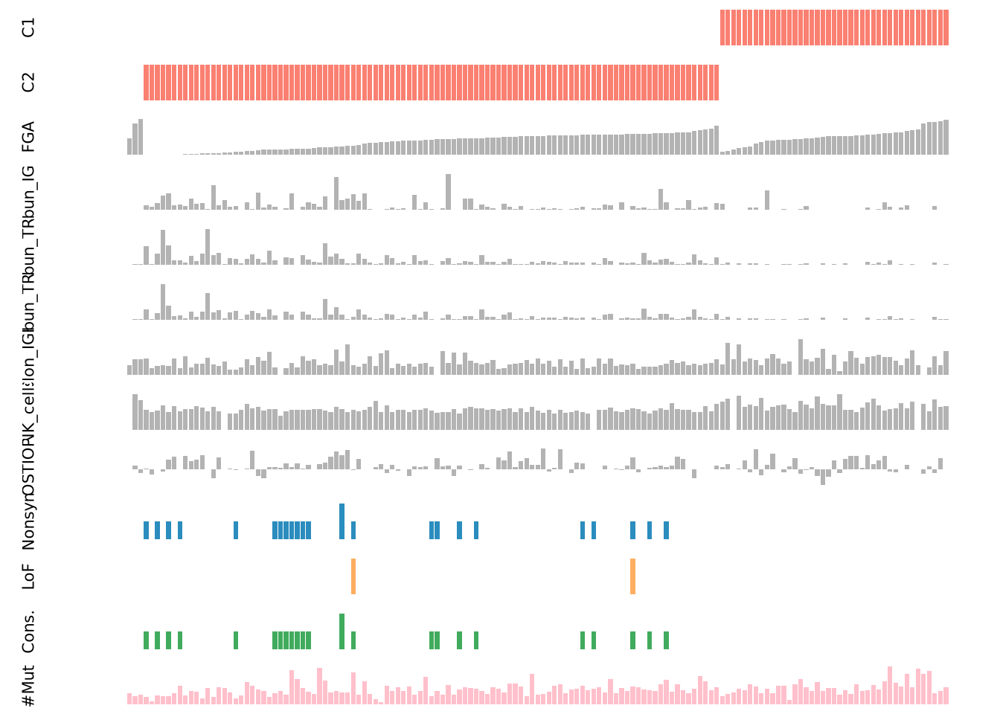
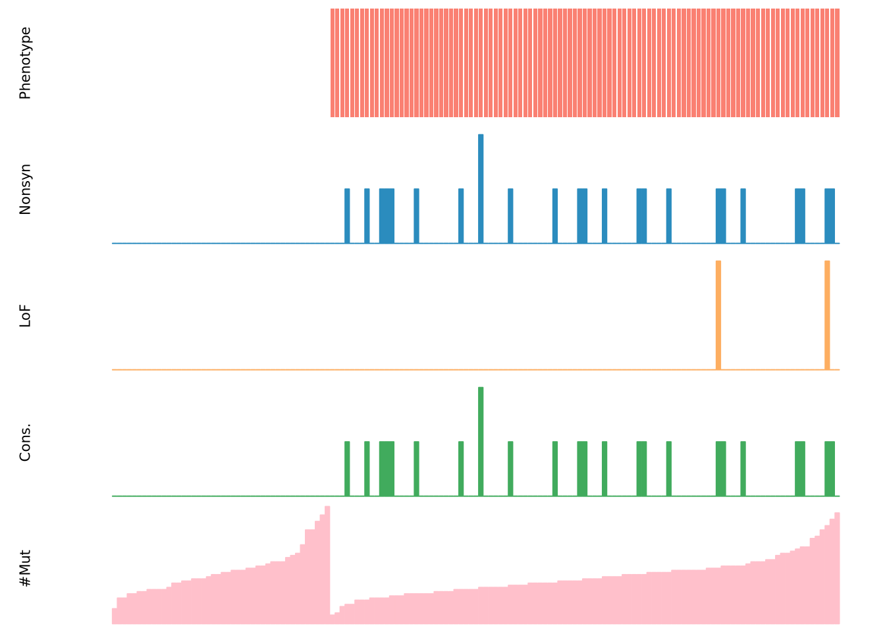

Individual gene
Qirui Zhang
2025-06-16
Last updated: 2025-06-19
Checks: 7 0
Knit directory: diffdriver/
This reproducible R Markdown analysis was created with workflowr (version 1.7.1). The Checks tab describes the reproducibility checks that were applied when the results were created. The Past versions tab lists the development history.
Great! Since the R Markdown file has been committed to the Git repository, you know the exact version of the code that produced these results.
Great job! The global environment was empty. Objects defined in the global environment can affect the analysis in your R Markdown file in unknown ways. For reproduciblity it’s best to always run the code in an empty environment.
The command set.seed(20250319) was run prior to running
the code in the R Markdown file. Setting a seed ensures that any results
that rely on randomness, e.g. subsampling or permutations, are
reproducible.
Great job! Recording the operating system, R version, and package versions is critical for reproducibility.
Nice! There were no cached chunks for this analysis, so you can be confident that you successfully produced the results during this run.
Great job! Using relative paths to the files within your workflowr project makes it easier to run your code on other machines.
Great! You are using Git for version control. Tracking code development and connecting the code version to the results is critical for reproducibility.
The results in this page were generated with repository version b6a2027. See the Past versions tab to see a history of the changes made to the R Markdown and HTML files.
Note that you need to be careful to ensure that all relevant files for
the analysis have been committed to Git prior to generating the results
(you can use wflow_publish or
wflow_git_commit). workflowr only checks the R Markdown
file, but you know if there are other scripts or data files that it
depends on. Below is the status of the Git repository when the results
were generated:
Ignored files:
Ignored: .Rproj.user/
Untracked files:
Untracked: code/run_workflowr.R
Unstaged changes:
Deleted: analysis/clinical_newplot.Rmd
Deleted: analysis/example.Rmd
Modified: analysis/immunesubtypes.Rmd
Deleted: analysis/immunesubtypes_newplot.Rmd
Modified: diffdriver.Rproj
Note that any generated files, e.g. HTML, png, CSS, etc., are not included in this status report because it is ok for generated content to have uncommitted changes.
These are the previous versions of the repository in which changes were
made to the R Markdown (analysis/individualgene.Rmd) and
HTML (docs/individualgene.html) files. If you’ve configured
a remote Git repository (see ?wflow_git_remote), click on
the hyperlinks in the table below to view the files as they were in that
past version.
| File | Version | Author | Date | Message |
|---|---|---|---|---|
| Rmd | b6a2027 | Qirui Zhang | 2025-06-19 | Publish analysis |
get_files <- function(outputdir, tumors = NULL, phenotypes = NULL) {
files <- list.files(
path = outputdir,
pattern = "_resdd\\.Rd$",
recursive = TRUE,
full.names = TRUE
)
matching_files_txt <- sub("\\.Rd$", ".txt", files)
analysis_mode <- ifelse(grepl("_sig_", basename(files)), "sig", "reg")
inner_folder_names <- basename(dirname(files))
phenotype_folder_names <- basename(dirname(dirname(files)))
tumor_names <- mapply(function(inner_name, phen) {
pattern_front <- paste0("^", phen, "_")
tmp <- sub(pattern_front, "", inner_name)
tmp <- sub("_mutations$", "", tmp)
return(tmp)
}, inner_folder_names, phenotype_folder_names)
phenos_all <- phenotype_folder_names
filedf <- data.frame(
tumor = tumor_names,
phenotype = phenos_all,
mode = analysis_mode,
file = files,
filetxt = matching_files_txt,
stringsAsFactors = FALSE
)
if (!is.null(tumors)) {
filedf <- filedf[filedf$tumor %in% tumors, ]
}
if (!is.null(phenotypes)) {
filedf <- filedf[filedf$phenotype %in% phenotypes, ]
}
rownames(filedf) <- NULL
return(filedf)
}
get_diff_table <- function(filedf, include_nonsig = TRUE){
pheno_all <- unique(filedf$phenotype)
numlist <- list()
for (p in pheno_all){
p_txtfiles <- filedf[filedf$phenotype == p, ]
numlist[[p]] <- list()
for (t in seq_len(nrow(p_txtfiles))){
txtf <- p_txtfiles[t, "filetxt"]
rdf <- p_txtfiles[t, "file"]
tumor <- p_txtfiles[t, "tumor"]
mode <- p_txtfiles[t, "mode"] # reg / sig
env <- new.env()
load(rdf, envir = env)
res_rdata <- env$res
res <- read.table(txtf, header = TRUE)
res$gene <- row.names(res)
res$mode <- mode
res$alpha <- sapply(res$gene, function(gene){
res_rdata[[gene]][["dd"]][["res.alt"]]$alpha[2]
})
res$significant <- res$dd.fdr < 0.1
if (include_nonsig) {
numlist[[p]][[ paste0(tumor, "_", mode) ]] <- res
} else {
sig_res <- res[res$dd.fdr < 0.1, ]
if (nrow(sig_res) > 0){
numlist[[p]][[ paste0(tumor, "_", mode) ]] <- sig_res
}
}
}
if (length(numlist[[p]]) == 0){
numlist[[p]] <- NULL
}
}
combined_df <- do.call(
rbind,
lapply(names(numlist), function(pheno) {
numlist.pheno <- numlist[[pheno]]
df.pheno <- do.call(rbind, lapply(names(numlist.pheno), function(tname) {
df <- numlist.pheno[[tname]]
df$tumor <- sub("_.*", "", tname)
df$mode <- sub(".*_", "", tname)
return(df)
}))
df.pheno$pheno <- pheno
return(df.pheno)
})
)
return(combined_df)
}dirs <- c(
"/dartfs/rc/lab/S/Szhao/qiruiz/diffdriver/temp/output/new_plot/immunesubtypes",
"/dartfs/rc/lab/S/Szhao/qiruiz/diffdriver/temp/output/new_plot/clinical",
"/dartfs/rc/lab/S/Szhao/qiruiz/diffdriver/temp/output/diversity",
"/dartfs/rc/lab/S/Szhao/qiruiz/diffdriver/temp/output/immunetraits",
"/dartfs/rc/lab/S/Szhao/qiruiz/diffdriver/temp/output/PRS"
)
res_list <- list()
for (dir_path in dirs) {
filedf <- get_files(outputdir = dir_path)
diff_table <- get_diff_table(filedf, include_nonsig = FALSE)
diff_TGCT_KIT <- subset(diff_table, mode == "sig" & tumor == "TGCT" & gene == "KIT")
if (nrow(diff_TGCT_KIT) > 0) {
source_name <- basename(dir_path)
diff_TGCT_KIT$source <- source_name
res_list[[source_name]] <- diff_TGCT_KIT
}
}
all_res <- do.call(rbind, res_list)subset_res <- all_res[c("pheno", "source")]
subset_res pheno source
immunesubtypes.KIT1 C1 immunesubtypes
immunesubtypes.KIT11 C2 immunesubtypes
clinical Fraction.Genome.Altered clinical
diversity.KIT1 Abundance_IGK diversity
diversity.KIT11 Abundance_TRA diversity
diversity.KIT12 Abundance_TRB diversity
diversity.KIT13 Clonality_IGH diversity
diversity.KIT14 Clonality_IGK diversity
diversity.KIT15 Clonality_IGL diversity
diversity.KIT16 Entropy_IGH diversity
diversity.KIT17 Entropy_IGK diversity
diversity.KIT18 Entropy_IGL diversity
diversity.KIT19 Entropy_TRA diversity
diversity.KIT110 Entropy_TRB diversity
immunetraits NK_cells immunetraits
PRS ukbEUR_OSTIOP PRSprep_pheno_mut_data_full <- function(mut, pheno) {
library(data.table)
mut <- as.data.table(mut)
pheno <- as.data.table(pheno)
if (!grepl("chr", mut$Chromosome[1], fixed = TRUE)) {
mut[ , Chromosome := paste0("chr", Chromosome)]
}
shared <- intersect(mut$SampleID, pheno$SampleID)
if (length(shared) < 10)
stop("too few samples with both phenotype and mutation data.")
mut <- mut [SampleID %in% shared]
pheno <- pheno[SampleID %in% shared]
if (anyDuplicated(pheno$SampleID)) {
pheno <- pheno[ , lapply(.SD, mean, na.rm = TRUE), by = SampleID]
}
ci <- pheno[ , .(SampleID, cidx = .I)]
list(mut = mut, pheno = pheno, ci = ci)
}
prep_mut_matrix <- function(gene_name, mut, pheno,
totalnttype = 96,
anno_dir = ".",
output_prefix = "plot",
output_dir = ".") {
library(data.table)
library(Matrix)
mut <- as.data.table(mut)
pheno_full <- as.data.table(pheno)
afileinfo <- list(
file = file.path(anno_dir,
paste0("anno", totalnttype,
"_nttypeXXX_annodata.txt")),
header = diffdriver:::aheader,
coltype = diffdriver:::acoltype,
totalntype = totalnttype)
rdata <- diffdriver:::prep_positional_data(
gene_name, afileinfo, BMRreg = NULL,
output_prefix = output_prefix,
output_dir = output_dir)
fanno <- rdata$fanno
ri <- rdata$ri
ri[ , ridx := .I]
cdata <- prep_pheno_mut_data_full(mut, pheno_full)
mut <- cdata$mut
pheno <- cdata$pheno
ci <- cdata$ci
nmutdt <- data.table(table(mut$SampleID))
setnames(nmutdt, c("SampleID", "Nmut"))
pheno <- merge(pheno, nmutdt, by = "SampleID", all.x = TRUE, sort = FALSE)
muti <- na.omit(
ci[ ri[mut,
on = c(chrom = "Chromosome",
start = "Position",
ref = "Ref",
alt = "Alt")],
on = "SampleID"])
mutmtx <- sparseMatrix(
i = muti$ridx,
j = muti$cidx,
dims = c(max(ri$ridx), max(ci$cidx)))
list(fanno = fanno, pheno = pheno, mutmtx = mutmtx)
}
plot_mut_multi <- function(gene_name,
mut, pheno,
pheno_cols = colnames(pheno)[-1],
totalnttype = 96,
anno_dir = ".",
output_prefix = "plot",
output_dir = ".",
mycolors = c("#FF3D2E", "#2b8cbe", "#fdae61",
"#41ab5d", "pink", "#8C2DA6", "#a65628")) {
pdata <- prep_mut_matrix(gene_name, mut, pheno,
totalnttype, anno_dir,
output_prefix, output_dir)
fanno <- pdata$fanno
pheno <- pdata$pheno
mutmtx <- pdata$mutmtx
metr_mat <- rbind(
Nonsyn = Matrix::colSums(mutmtx),
LoF = Matrix::colSums(mutmtx[fanno$functypecode8 > 0, ]),
Cons. = Matrix::colSums(mutmtx[fanno$mycons > 0, ]),
`#Mut` = pheno$Nmut
)
pheno_mat <- t(as.matrix(pheno[, pheno_cols, with = FALSE]))
rownames(pheno_mat) <- pheno_cols
df <- rbind(pheno_mat, metr_mat)
# ord <- order(df[1, ])
# df <- df[, ord]
fac_C1 <- df["C1", ]
fac_C2 <- df["C2", ]
val_FGA <- df["FGA", ]
ord <- order(fac_C1, fac_C2, val_FGA, na.last = TRUE)
df <- df[, ord]
n_row <- nrow(df)
par(mfrow = c(n_row, 1), mar = c(0.5, 5, 0.5, 1))
for (i in seq_len(n_row)) {
vec <- df[i, ]
if (length(unique(vec)) == 2 && i <= nrow(pheno_mat)) {
barplot(rep(1, length(vec)),
col = c("white", "salmon")[as.factor(vec)],
xaxt = "n", yaxt = "n",
ylab = rownames(df)[i], border = NA)
} else {
ylim_i <- if (rownames(df)[i] == "#Mut") {
c(0, quantile(vec, 0.99)[[1]])
} else NULL
barplot(vec,
col = if (i <= nrow(pheno_mat))
"grey70"
else
mycolors[i - nrow(pheno_mat) + 1],
xaxt = "n", yaxt = "n",
ylab = rownames(df)[i],
border = NA,
ylim = ylim_i)
}
}
}mut_path <- "/dartfs/rc/lab/S/Szhao/qiruiz/diffdriver/tumor_specific_input/TGCT/TGCT_mutations.txt"
mut <- read.table(mut_path, header = TRUE, sep = "\t")
head(mut) Chromosome Position Ref Alt SampleID
1 16 30748991 C T TCGA-SN-A84Y
2 17 8439201 G A TCGA-XE-AAOB
3 14 96858506 G A TCGA-YU-A94I
4 7 100679429 T A TCGA-2G-AAL5
5 7 156802391 G A TCGA-WZ-A7V3
6 3 189586427 G T TCGA-2G-AAG7library(data.table)
pheno_files <- list(
C1 = "/dartfs/rc/lab/S/Szhao/qiruiz/diffdriver/batch2/tumor_specific_input/TGCT/TGCT_C1.txt",
C2 = "/dartfs/rc/lab/S/Szhao/qiruiz/diffdriver/batch2/tumor_specific_input/TGCT/TGCT_C2.txt",
FGA = "/dartfs/rc/lab/S/Szhao/qiruiz/diffdriver/cbioportal_download/Fraction.Genome.Altered.txt",
Abun_IGK = "/dartfs/rc/lab/S/Szhao/qiruiz/diffdriver/batch4/Abundance_IGK.txt",
Abun_TRA = "/dartfs/rc/lab/S/Szhao/qiruiz/diffdriver/batch4/Abundance_TRA.txt",
Abun_TRB = "/dartfs/rc/lab/S/Szhao/qiruiz/diffdriver/batch4/Abundance_TRB.txt",
Clon_IGH = "/dartfs/rc/lab/S/Szhao/qiruiz/diffdriver/batch4/Clonality_IGH.txt",
# Clon_IGK = "/dartfs/rc/lab/S/Szhao/qiruiz/diffdriver/batch4/Clonality_IGK.txt"
# Clon_IGL = "/dartfs/rc/lab/S/Szhao/qiruiz/diffdriver/batch4/Clonality_IGL.txt",
# Ent_IGH = "/dartfs/rc/lab/S/Szhao/qiruiz/diffdriver/batch4/Entropy_IGH.txt",
# Ent_IGK = "/dartfs/rc/lab/S/Szhao/qiruiz/diffdriver/batch4/Entropy_IGK.txt",
# Ent_IGL = "/dartfs/rc/lab/S/Szhao/qiruiz/diffdriver/batch4/Entropy_IGL.txt",
# Ent_TRA = "/dartfs/rc/lab/S/Szhao/qiruiz/diffdriver/batch4/Entropy_TRA.txt",
# Ent_TRB = "/dartfs/rc/lab/S/Szhao/qiruiz/diffdriver/batch4/Entropy_TRB.txt",
NK_cells = "/dartfs/rc/lab/S/Szhao/qiruiz/diffdriver/batch3/tumor_specific_input/TGCT/TGCT_NK_cells.txt",
OSTIOP = "/dartfs/rc/lab/S/Szhao/qiruiz/diffdriver/batch5/tumor_specific_input/TGCT/46/TGCT_ukbEUR_OSTIOP.txt"
)
pheno_list <- lapply(names(pheno_files), function(nm) {
dt <- fread(pheno_files[[nm]], header = TRUE, sep = "\t")
setnames(dt, old = colnames(dt)[2], new = nm)
dt
})
pheno_wide <- Reduce(function(x, y) merge(x, y, by = "SampleID", all = TRUE),
pheno_list)
pheno_cols <- names(pheno_files)plot_mut_multi(
gene_name = "KIT",
mut = mut,
pheno = pheno_wide,
pheno_cols = pheno_cols,
anno_dir = "/dartfs/rc/lab/S/Szhao/qiruiz/diffdriver/temp/annodir96"
)Warning: package 'Matrix' was built under R version 4.4.3[1] "coding..."
[1] "processing ..."
[1] "for qnvars, filling in missing values ..."
[1] "for cvars (0/1 categories), filling in missing values ..."
[1] "normalizing categorical variables in annotation matrix ..."
mut_path <- "/dartfs/rc/lab/S/Szhao/qiruiz/diffdriver/tumor_specific_input/TGCT/TGCT_mutations.txt"
mut <- read.table(mut_path, header = TRUE, sep = "\t")
head(mut) Chromosome Position Ref Alt SampleID
1 16 30748991 C T TCGA-SN-A84Y
2 17 8439201 G A TCGA-XE-AAOB
3 14 96858506 G A TCGA-YU-A94I
4 7 100679429 T A TCGA-2G-AAL5
5 7 156802391 G A TCGA-WZ-A7V3
6 3 189586427 G T TCGA-2G-AAG7pheno_path <- "/dartfs/rc/lab/S/Szhao/qiruiz/diffdriver/batch2/tumor_specific_input/TGCT/TGCT_C1.txt"
pheno <- read.table(pheno_path, header = TRUE, sep = "\t")
head(pheno) SampleID C1
1 TCGA-2G-AAFI 0
2 TCGA-2G-AAFM 0
3 TCGA-2G-AAFY 0
4 TCGA-2G-AAG0 0
5 TCGA-2G-AAG9 0
6 TCGA-2G-AAGG 0diffdriver::plot_mut(gene_name = "KIT", mut= mut, pheno = pheno, totalnttype = 96,
anno_dir = "/dartfs/rc/lab/S/Szhao/qiruiz/diffdriver/temp/annodir96")[1] "coding..."
[1] "processing ..."
[1] "for qnvars, filling in missing values ..."
[1] "for cvars (0/1 categories), filling in missing values ..."
[1] "normalizing categorical variables in annotation matrix ..."
[1] "Only keeping the first two columns of the phenotype data frame."
[1] "phenotype name is C1"
[1] "number of samples shared in phenotype and mutation file: 147"
pheno_path <- "/dartfs/rc/lab/S/Szhao/qiruiz/diffdriver/batch2/tumor_specific_input/TGCT/TGCT_C2.txt"
pheno <- read.table(pheno_path, header = TRUE, sep = "\t")
head(pheno) SampleID C2
1 TCGA-2G-AAFI 1
2 TCGA-2G-AAFM 1
3 TCGA-2G-AAFY 1
4 TCGA-2G-AAG0 1
5 TCGA-2G-AAG9 1
6 TCGA-2G-AAGG 1diffdriver::plot_mut(gene_name = "KIT", mut= mut, pheno = pheno, totalnttype = 96,
anno_dir = "/dartfs/rc/lab/S/Szhao/qiruiz/diffdriver/temp/annodir96")[1] "coding..."
[1] "processing ..."
[1] "for qnvars, filling in missing values ..."
[1] "for cvars (0/1 categories), filling in missing values ..."
[1] "normalizing categorical variables in annotation matrix ..."
[1] "Only keeping the first two columns of the phenotype data frame."
[1] "phenotype name is C2"
[1] "number of samples shared in phenotype and mutation file: 147"
library(data.table)
pheno_files <- list(
C1 = "/dartfs/rc/lab/S/Szhao/qiruiz/diffdriver/batch2/tumor_specific_input/TGCT/TGCT_C1.txt",
C2 = "/dartfs/rc/lab/S/Szhao/qiruiz/diffdriver/batch2/tumor_specific_input/TGCT/TGCT_C2.txt",
FGA = "/dartfs/rc/lab/S/Szhao/qiruiz/diffdriver/cbioportal_download/Fraction.Genome.Altered.txt",
Abun_IGK = "/dartfs/rc/lab/S/Szhao/qiruiz/diffdriver/batch4/Abundance_IGK.txt",
Abun_TRA = "/dartfs/rc/lab/S/Szhao/qiruiz/diffdriver/batch4/Abundance_TRA.txt",
Abun_TRB = "/dartfs/rc/lab/S/Szhao/qiruiz/diffdriver/batch4/Abundance_TRB.txt",
Clon_IGH = "/dartfs/rc/lab/S/Szhao/qiruiz/diffdriver/batch4/Clonality_IGH.txt",
Clon_IGK = "/dartfs/rc/lab/S/Szhao/qiruiz/diffdriver/batch4/Clonality_IGK.txt",
Clon_IGL = "/dartfs/rc/lab/S/Szhao/qiruiz/diffdriver/batch4/Clonality_IGL.txt",
Ent_IGH = "/dartfs/rc/lab/S/Szhao/qiruiz/diffdriver/batch4/Entropy_IGH.txt",
Ent_IGK = "/dartfs/rc/lab/S/Szhao/qiruiz/diffdriver/batch4/Entropy_IGK.txt",
Ent_IGL = "/dartfs/rc/lab/S/Szhao/qiruiz/diffdriver/batch4/Entropy_IGL.txt",
Ent_TRA = "/dartfs/rc/lab/S/Szhao/qiruiz/diffdriver/batch4/Entropy_TRA.txt",
Ent_TRB = "/dartfs/rc/lab/S/Szhao/qiruiz/diffdriver/batch4/Entropy_TRB.txt",
NK_cells = "/dartfs/rc/lab/S/Szhao/qiruiz/diffdriver/batch3/tumor_specific_input/TGCT/TGCT_NK_cells.txt",
OSTIOP = "/dartfs/rc/lab/S/Szhao/qiruiz/diffdriver/batch5/tumor_specific_input/TGCT/46/TGCT_ukbEUR_OSTIOP.txt"
)
check_consistency <- function(path, colname) {
dt <- fread(path)
setnames(dt, old = names(dt)[1], new = "SampleID")
setnames(dt, old = names(dt)[2], new = colname)
dup_dt <- dt[duplicated(SampleID) | duplicated(SampleID, fromLast = TRUE)]
inconsistent <- dup_dt[ , .(n_value = uniqueN(get(colname))), by = SampleID][n_value > 1]
data.table(
file = basename(path),
dup_rows = nrow(dup_dt),
dup_samples = uniqueN(dup_dt$SampleID),
conflict_samp = nrow(inconsistent)
)
}
result <- rbindlist(
Map(check_consistency,
path = pheno_files,
colname = names(pheno_files))
)
print(result) file dup_rows dup_samples conflict_samp
<char> <int> <int> <int>
1: TGCT_C1.txt 0 0 0
2: TGCT_C2.txt 0 0 0
3: Fraction.Genome.Altered.txt 20 10 9
4: Abundance_IGK.txt 1620 781 779
5: Abundance_TRA.txt 1620 781 761
6: Abundance_TRB.txt 1620 781 769
7: Clonality_IGH.txt 1461 707 704
8: Clonality_IGK.txt 1605 775 775
9: Clonality_IGL.txt 1550 749 747
10: Entropy_IGH.txt 1461 707 704
11: Entropy_IGK.txt 1605 775 775
12: Entropy_IGL.txt 1550 749 747
13: Entropy_TRA.txt 1491 723 716
14: Entropy_TRB.txt 1536 747 742
15: TGCT_NK_cells.txt 0 0 0
16: TGCT_ukbEUR_OSTIOP.txt 0 0 0
sessionInfo()R version 4.4.2 (2024-10-31)
Platform: x86_64-conda-linux-gnu
Running under: Ubuntu 24.04.1 LTS
Matrix products: default
BLAS/LAPACK: /dartfs-hpc/rc/home/p/f0070pp/.conda/envs/diffdriver/lib/libopenblasp-r0.3.29.so; LAPACK version 3.12.0
locale:
[1] LC_CTYPE=en_US.UTF-8 LC_NUMERIC=C
[3] LC_TIME=en_US.UTF-8 LC_COLLATE=en_US.UTF-8
[5] LC_MONETARY=en_US.UTF-8 LC_MESSAGES=en_US.UTF-8
[7] LC_PAPER=en_US.UTF-8 LC_NAME=C
[9] LC_ADDRESS=C LC_TELEPHONE=C
[11] LC_MEASUREMENT=en_US.UTF-8 LC_IDENTIFICATION=C
time zone: Etc/UTC
tzcode source: system (glibc)
attached base packages:
[1] stats graphics grDevices utils datasets methods base
other attached packages:
[1] Matrix_1.7-3 data.table_1.17.4 workflowr_1.7.1
loaded via a namespace (and not attached):
[1] jsonlite_2.0.0 compiler_4.4.2 promises_1.3.3 Rcpp_1.0.14
[5] stringr_1.5.1 git2r_0.36.2 callr_3.7.6 later_1.4.2
[9] jquerylib_0.1.4 yaml_2.3.10 fastmap_1.2.0 lattice_0.22-7
[13] R6_2.6.1 knitr_1.50 tibble_3.2.1 rprojroot_2.0.4
[17] bslib_0.9.0 pillar_1.10.2 diffdriver_0.1.6 rlang_1.1.6
[21] cachem_1.1.0 stringi_1.8.7 httpuv_1.6.16 xfun_0.52
[25] getPass_0.2-4 fs_1.6.6 sass_0.4.10 cli_3.6.5
[29] magrittr_2.0.3 ps_1.9.1 digest_0.6.37 grid_4.4.2
[33] processx_3.8.6 rstudioapi_0.17.1 lifecycle_1.0.4 vctrs_0.6.5
[37] evaluate_1.0.3 glue_1.8.0 whisker_0.4.1 rmarkdown_2.29
[41] httr_1.4.7 tools_4.4.2 pkgconfig_2.0.3 htmltools_0.5.8.1